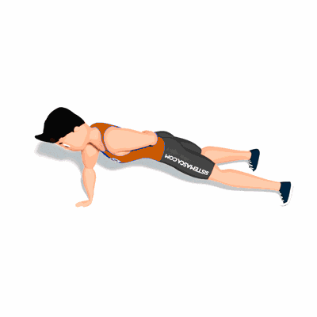

Flexão com um Braço

Por esse exercício utilizar somente de um braço os resultados nos músculos do peitoral serão intensificados e é recomendado para praticantes mais avançados.
Ficha Técnica
Tipo: Musculação
Grupo Muscular: Peito
Aparelho: Nenhum
Músculos: Nenhum
Como realizar
- Coloque-se na posição padrão de flexão com os pés mais afastados que a largura dos ombros;
- Posicione uma mão no chão diretamente abaixo do peito e a outra mão atrás da região lombar;
- Endireite as pernas atrás de você, afaste-as e aponte os dedos para o chão;
- Mantendo o centro do corpo firme, "parafuse" a palma da mão firme no solo, girando-a levemente e lentamente baixe o peito em direção ao chão;
- Faça uma pausa e retorne à posição inicial.
 RC STORE
RC STORE